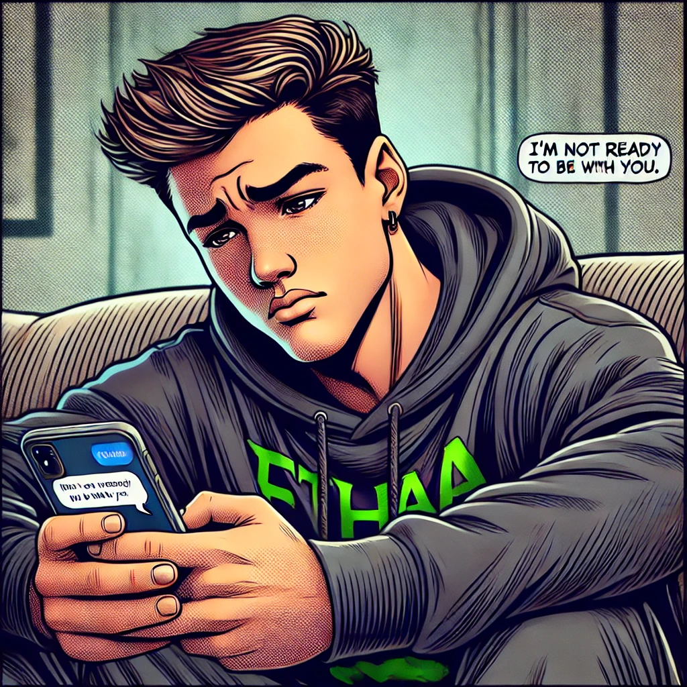

First Meeting
Hi!
Hi...
First Dance?
Tia calls Ethan to dance but....
A Shy Moment Neither Will Ever Forget
Ethan hugs the green pole instead of the girl...
(They dont see each other again for nearly a decade)
Sliding into DMs

Ethan gathers the confidence to message Tia
Tia replies...

Ethan's day is made
A Day of Pure Sadness
Ethan wakes up to a text which made gim feel like the world was crumbling around him
They never spoke for 6 months... but Ethan never stopped thinking about her
The Surprise Reunion
Tia feels nervous as she does not know how to face Ethan after everything that has happened
They See Each Other Again
Ethan cannot believe how beautiful she is..
A Day of Mixed Emotions
Tia finally breaks up with Ryan, she is devastated but Ethan is there to help her through it
Though he feels bad for her... well.. We can tell by his grin (Sorry not Sorry LOL!)
Tia tells Ethan How She Feels

Tia just is not ready for a relationship yet.
Ethan finds it hard to reconcile with this news.... but he never gave up..
And ..... It Finally Began!
The signs begin to show bit by bit... Ethan's dreams are coming true..
The texts start to get... SPICY!
Ethan works his charm.. pulling out every flirty trick in his arsenal üòèüòé
Tia starts dreaming about what could be if she finally gives in and falls into Ethan's arms... ü§≠
The First Kiss ❤️
It finally happens... TIA KISSED ETHAN FIRST!!!..
The First Kiss
Tia can't quite believe what she has just done... Ethan on the other hand is trying to act cool and not celebrate like he has won the World Cup..
The Day They Were Seperated Again :(
Both of them are heartbroken as they realize the day they were dreading has come...
Tia is emotionally broken..
Ethan is speechless and can't get over the fact she's not beside him...
One-Year Anniversary
They celebrate their One Year Anniversary!!! ❤️
Struggles of Distance
Ethan struggles with being away from her.. so he resorts to behaviour which he just is not proud of..
Tia loses her temper too... both are trying hard to deal with the sadness of being apart... but their Love holds strong..
Happily Ever After
Fast forward....Through the struggles, their love never broke. They stayed strong and got the chance to say "I do" and live happily ever after.

Ethan & Tia 2022 - ∞
They grow old together with three beautiful kids, two dogs and a huge house... They look back on the years of struggle with a smile as it was an important part of their story that made their bond unbreakable. Their Love story will never end... To Be Continued.
‚ù§Ô∏è üíñ ‚ù§Ô∏è